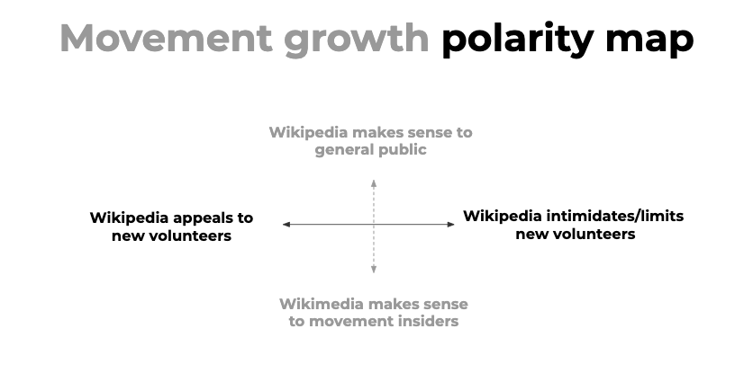
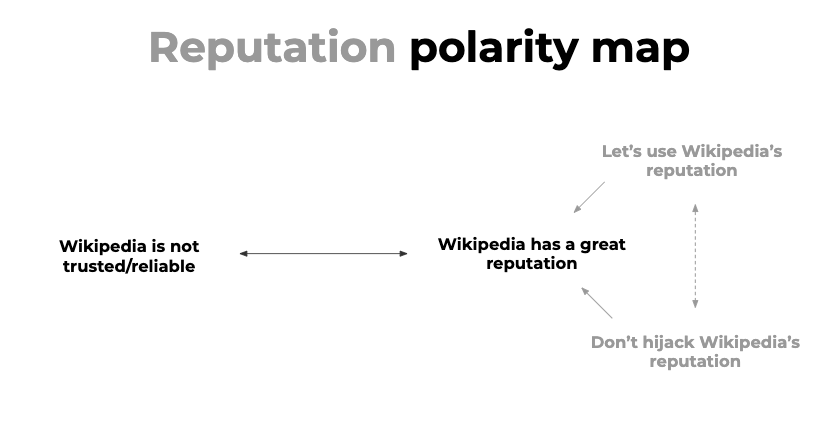
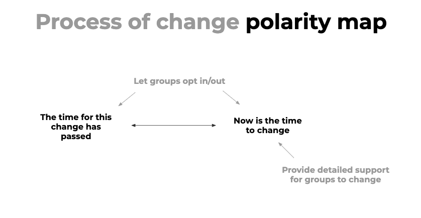
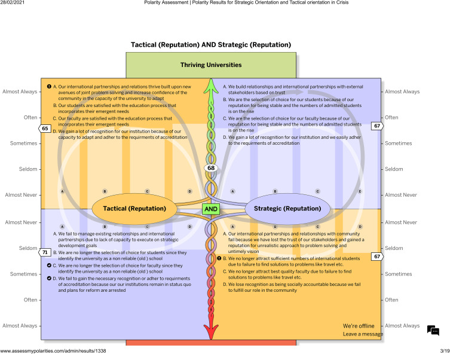
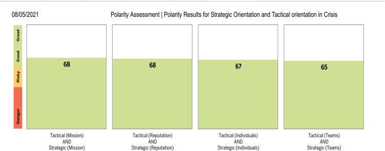

Polarity map
About
A polarity map is a set of horizontal spectrums, each representing a pair of opposing values or stances found in your research. Unlike a design recommendation, which picks a position, a polarity map shows that both ends of each spectrum have legitimate value — and that the design challenge is to navigate the tension rather than eliminate it. For example: between "highly structured guidance" and "open-ended exploration," both ends serve real user needs in different contexts. The map treats design tensions as ongoing management challenges, not problems to be solved once and forgotten.
When to use
Use a polarity map when research reveals that different users — or the same user in different contexts — need genuinely opposing things. It is particularly useful in design strategy and framing sessions before ideation, to prevent the team from prematurely collapsing complexity into a single position. It also works as a facilitation tool in workshops to expose hidden assumptions about whose needs the design should prioritize.
When not to use
Do not use a polarity map when the tension is not genuine — when one end of the spectrum is clearly better for users. Polarity maps are for real both/and situations, not either/or decisions where research has already indicated a clear direction.
References
Examples
Click any example to view full size and visit the original source.




